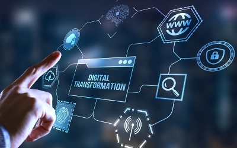
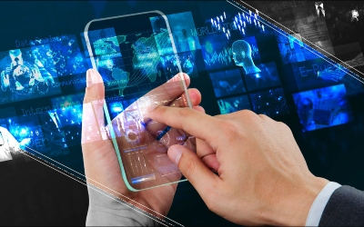

Tecnologia
La tecnologia és el motor de la societat moderna. Des de les primeres eines de pedra fins als avanços digitals d'avui, la tecnologia ha estat sempre present en la nostra evolució.
Transformació Digital
La transformació digital ha canviat la manera com vivim i treballem. L'ús d'internet, la computació en núvol i la intel·ligència artificial ha revolucionat molts aspectes de la nostra vida diària.
Tecnologia Mòbil
Els telèfons intel·ligents i les tauletes ens mantenen connectats en tot moment. Aquests dispositius han obert noves oportunitats en comunicació, educació, entreteniment i negocis.
Tecnologia de la Informació
Les xarxes i sistemes informàtics són la columna vertebral de la societat digital. Des dels servidors fins als dispositius de xarxa, la tecnologia de la informació fa possible el flux d'informació a escala global.